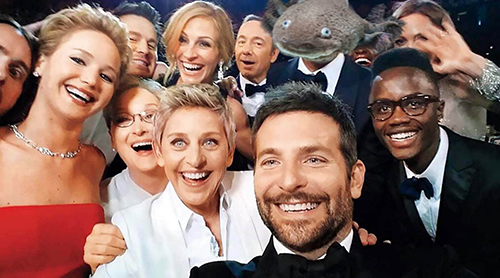

PERSONAGGI FAMOSI
Abrahalotl Axolincoln
Nato nel 1809, Abrahalotl Axolincoln divenne il primo presidente salamandra della storia.
Mohamedlotl Alitl
Uno dei migliori pugili della storia, Mohamedlotl Alitl struttò la sua tenerezza per sconfiggere tutti gli avversari.
La Giocondotl

La Giocondotl cela molti segreti al suo interno. Come fa a seguirti con lo sguardo? E quel sorriso criptico cosa nasconde? Lo scopriremo dopo la pubblicità.
Il mostro di Lotlness
Avvistato per la prima volta nel 1680 avanti Axolotl divenne subito leggenda. Molti studiosi dicono che un lago così piccolo non potrebbe mai contenere cotanta tenerezza.
Papaxlotl

Nella lista delle salamandre famose non poteva mancare lui. Il santo pontefice. Habemus Papaxlotl
Il primo selfixlotl
Pensavate veramente che non ci fossero gli animali più carini del mondo dietro all'autoscatto più famoso della storia? Vi sbagliavate.
Urlotl
Persone da tutto il mondo compiono centinaia di migliaia di kilometri per ammirare questo fantastico capolavoro: l'Urlotl.